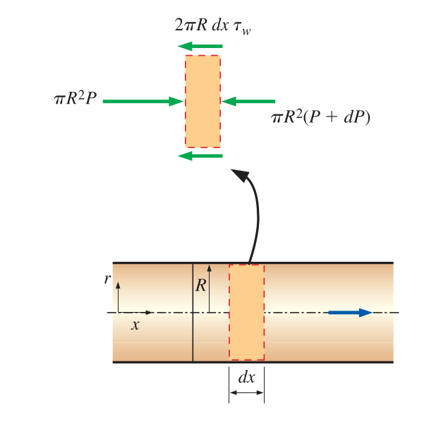
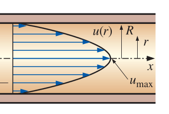

 \[\pi R^2 P - \pi R^2 (P + dP) - 2 \pi R dx \tau_w = 0 \Rightarrow \dfrac{dP}{dx} = - \dfrac{2 \tau_w}{R}\]
 \[u(r) = 2 V_{\text{avg}} \left( 1 - \dfrac{r^2}{R^2} \right)\]
\[u_{\text{max}} = 2 V_{\text{avg}}\] Average velocity in fully developed laminar pipe flow is half of maximum velocity
\[u(r) = u_{\text{max}} \left( 1 - \dfrac{r^2}{R^2} \right)\] \[\Rightarrow u(r) = (6)\left(1 - \dfrac{r^2}{(0.02)^2} \right) = 6(1-2500r^2)\] \[V = \dfrac{u_{\text{max}}}{2} = \dfrac{6}{2} = 3\,\mathrm{m/s}\] \[Q = V A = (3)(\pi)(0.04)^2 / 4 = 0.00377\,\mathrm{m^3/s}\]
\[Q_1=Q_2\]
\[\left( \dfrac{P_1}{\rho g} + \dfrac{V_1^2}{2g} + z_1 \right) = \left( \dfrac{P_2}{\rho g} + \dfrac{V_2^2}{2g} + z_2 \right) + h_l\]
\[\sum F_x = \Delta P (\pi R^2) + \rho g \pi R^2 L \sin{\phi} - \tau_w (2 \pi R) L\] \[= \dot{m} (V_2 - V_1) = 0\]
\[h_l = (z_1 - z_2) + \left( \dfrac{P_1}{\rho g} - \dfrac{P_2}{\rho g} \right) = \Delta z + \dfrac{\Delta P}{\rho g}\]
\[\Delta P R + \rho g R L \sin{\phi} - 2 \tau_w L = 0\]
\[\dfrac{\Delta P}{\rho g} + \Delta z = \dfrac{2 \tau_w L}{\rho g R}\]
\[\dfrac{\Delta P}{\rho g} + \Delta z = h_l = \dfrac{4 \tau_w}{\rho g} \dfrac{L}{D}\]
\[\boxed{h_l = f \dfrac{L}{D} \dfrac{V^2}{2 g}}\] Friction (Darcy-Weisbach) factor \(f\) is a function of \(\text{Re}\), duct shape and roughness
\[\boxed{f = \dfrac{8 \tau_w}{\rho V^2}}\]
Friction factor only depends on Reynolds number for laminar flow \[\boxed{f = \dfrac{64 \mu}{\rho D V} = \dfrac{64}{\text{Re}}}\]
\[\dfrac{\Delta P}{\rho g} = h_l = f \dfrac{L}{D} \dfrac{V^2}{2g}\]
\[\Rightarrow \dfrac{\Delta P}{\rho g} = \dfrac{64}{\text{Re}} \dfrac{L}{D} \dfrac{V^2}{2g} \Rightarrow \Delta P = \dfrac{64 \mu \rho g L D V^2}{2g D \rho D V} = \dfrac{32 \mu L V}{D^2}\]
\[\text{Re} = \dfrac{\rho V D}{\mu} = \dfrac{(1252)(3)(0.04)}{0.3073} = 488.9\] Laminar flow \[f=\dfrac{64}{\text{Re}} = \dfrac{64}{488.9} = 0.1309\] \[h_l = f \dfrac{L V^2}{D 2g} = (0.1309)\dfrac{(70)(3)}{(0.04)(2)(9.81)} = 105.1\,\mathrm{m}\]
\[\dfrac{P_1}{\rho g} + \cancel{\dfrac{V_1^2}{2g}} + z_1 + h_p = \dfrac{P_2}{\rho g} + \cancel{\dfrac{V_2^2}{2g}} + z_2 + h_t + h_l\] \[\Delta P = P_1 - P_2 = \rho g (z_2 - z_1 + h_l)\] \[\Delta P = (1252)(9.81)(0 + 105.1) = 1290850.8\,\mathrm{Pa}\] \[W_p = Q \Delta P = (0.00377)(1290850.8) = 4866.51\,\mathrm{W}\]
Assume that entrance effects are negligible and flow is fully developed. \[h_l = f \dfrac{L}{D} \dfrac{V^2}{2g}\] \[f = \dfrac{56.92}{\text{Re}}\] \[\text{Re} = \dfrac{\rho V D}{\mu}\]
\[h_l = \dfrac{56.92 \mu}{\rho V D} \dfrac{L}{D} \dfrac{V^2}{2g} = \dfrac{28.46 \mu L V}{\rho g D^2}\] Therefore head loss will also double when velocity doubles.